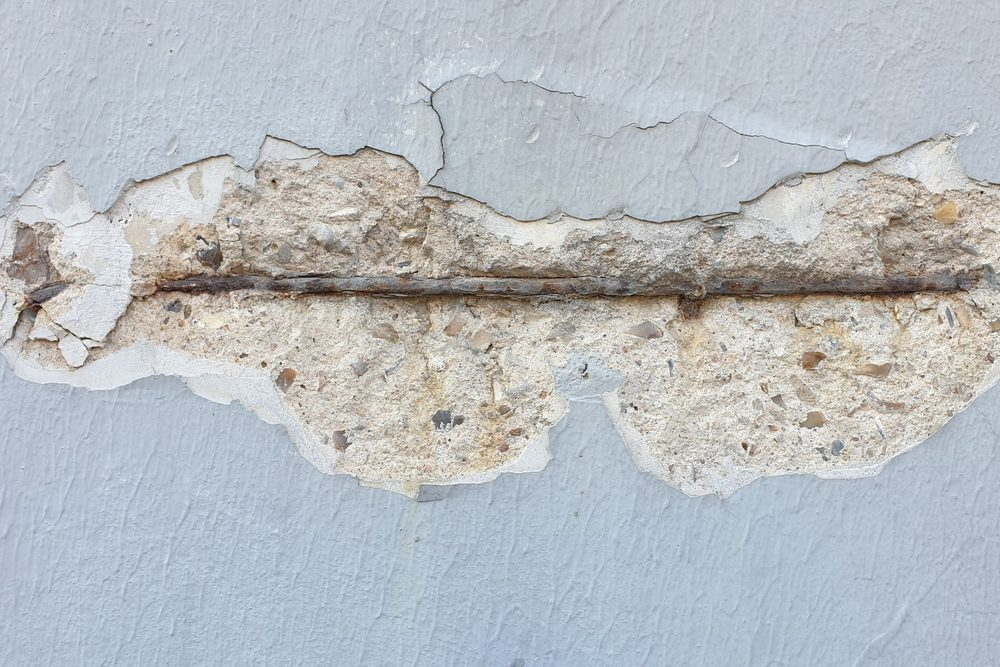
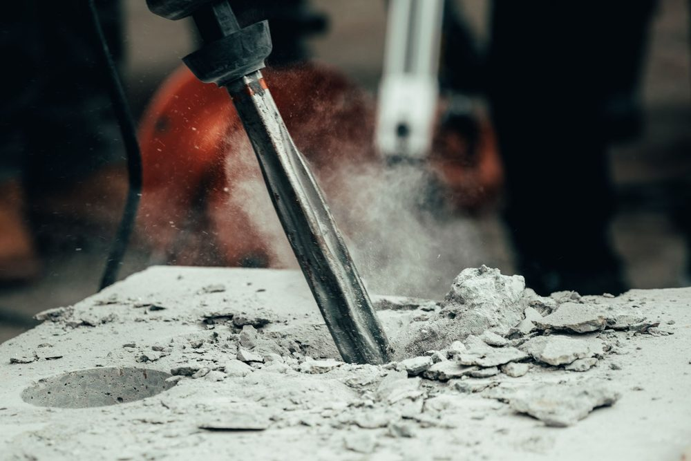

Pourquoi un balcon en béton se dégrade-t-il ?
Un balcon en béton armé est l'un des éléments les plus exposés d'un bâtiment. Il reçoit la pluie, le soleil et les écarts de température sur toutes ses faces, et il travaille en porte-à-faux, c'est-à-dire qu'il n'est appuyé que d'un seul côté. Ses armatures principales sont placées dans la partie haute de la dalle, là où le béton est tendu. Si elles se dégradent, c'est directement la capacité du balcon à porter qui est en jeu.
Le béton protège l'acier de deux façons : il l'enrobe physiquement, et sa forte alcalinité (un pH proche de 13) crée autour de l'acier une pellicule protectrice. Tant que cette protection tient, l'acier ne rouille pas. Les désordres commencent lorsque l'une ou l'autre disparaît, ce qui arrive plus vite sur un balcon que sur un mur intérieur.
La carbonatation et les chlorures : les deux mécanismes de la corrosion
Deux phénomènes sont à l'origine de la plupart des balcons abîmés.
La carbonatation. Le gaz carbonique de l'air pénètre lentement dans le béton et en abaisse l'alcalinité. Lorsque ce front de carbonatation atteint les armatures, la pellicule protectrice disparaît et l'acier commence à rouiller. Le phénomène avance d'autant plus vite que le béton est poreux et que l'enrobage, c'est-à-dire l'épaisseur de béton qui recouvre l'acier, est faible.
Les chlorures. Ils proviennent de l'air marin ou, dans certaines régions, des sels de déverglaçage. Ils traversent le béton et attaquent directement l'acier, même si le béton n'est pas carbonaté. C'est la cause principale des dégradations en bord de mer, notamment aux Antilles, où nous renvoyons à notre article sur le béton en milieu marin et tropical.
Dans les deux cas, la rouille occupe un volume bien supérieur à celui de l'acier sain. Elle pousse le béton de l'intérieur, le fissure puis le fait éclater : c'est ce que l'on appelle un éclatement ou une épaufrure.
Une tache de rouille sur un balcon n'est jamais seulement esthétique. Elle indique que l'eau et l'air ont atteint l'acier. Plus la corrosion est traitée tôt, plus la réparation est simple et peu coûteuse.
Les classes d'exposition : pourquoi un balcon est plus exposé qu'une dalle intérieure
La norme NF EN 206 classe les environnements du béton selon le risque de corrosion. L'Eurocode 2 (NF EN 1992-1-1) s'appuie sur ces classes pour fixer l'enrobage minimal des armatures : plus l'exposition est sévère, plus il faut protéger l'acier par une épaisseur de béton importante.
| Classe | Situation | Exemple |
|---|---|---|
| XC1 | Sec ou humide en permanence | Dalle à l'intérieur d'un logement |
| XC3 | Humidité modérée | Béton abrité de la pluie à l'extérieur |
| XC4 | Alternance d'humidité et de séchage | Balcon ou sous-face exposés à la pluie |
| XD1 à XD3 | Chlorures autres que marins | Sels de déverglaçage |
| XS1 à XS3 | Chlorures d'origine marine | Balcon en bord de mer, embruns |
Un balcon exposé à la pluie relève en général de la classe XC4, et de la classe XS en bord de mer. Un enrobage conforme à une dalle intérieure ne convient donc pas : c'est une cause fréquente de désordres sur les balcons anciens ou mal exécutés. Le sujet est détaillé dans notre article sur l'enrobage des armatures.

Les signes qui doivent alerter
La dégradation suit généralement une progression que l'on peut repérer à l'œil nu :
- Traces brunes ou orangées qui coulent depuis une fissure ou le long de la sous-face.
- Fissures alignées avec la position des barres d'acier, souvent parallèles au bord du balcon.
- Fragments de béton qui se détachent ou sonnent creux lorsqu'on frappe doucement avec un marteau.
- Armatures apparentes, rouillées, parfois réduites en section.
- Déformation : flèche visible du balcon, pente inversée vers la façade, fissure à la jonction avec le mur.
Les deux derniers signes sont les plus sérieux. Une fissure à la jonction avec la façade, en partie haute, peut traduire un problème au niveau de l'encastrement du balcon. Pour distinguer une fissure superficielle d'un désordre structurel, vous pouvez vous reporter à notre article sur les fissures dans un bâtiment.
Comment se déroule un diagnostic
Un diagnostic structurel de balcon suit une démarche simple, qui s'adapte à l'ampleur des désordres :
- Examen visuel et relevé des désordres : localisation des éclats, des fissures et des traces de rouille.
- Sondages ponctuels : l'entreprise ouvre localement le béton pour mesurer l'enrobage réel et l'état des armatures.
- Test de carbonatation : une solution indicatrice (la phénolphtaléine) vire au rose sur le béton resté alcalin et reste incolore sur le béton carbonaté.
- Vérification de la capacité portante : on compare les armatures restantes aux charges que le balcon doit porter, selon l'Eurocode 2.
- Préconisations : simple réparation, renforcement, limitation d'usage ou démolition.
Ce que fait MH Structure, et ce qu'il ne fait pas. Nous réalisons le diagnostic structurel et, si le balcon doit être renforcé, la note de calcul et le plan de renfort. Nous ne réalisons pas les travaux de réparation, qui relèvent d'une entreprise spécialisée dans la réparation du béton.
Réparer durablement : le principe
Une réparation durable suit toujours la même logique, quelle que soit l'entreprise qui l'exécute :
- Purger le béton dégradé jusqu'à atteindre un support sain, en dégageant les armatures sur tout leur pourtour.
- Traiter les armatures rouillées, ou les remplacer ou les compléter lorsque la perte de section est importante.
- Reconstituer l'enrobage avec un mortier de réparation adapté, compatible avec le béton existant.
- Protéger la surface et soigner l'étanchéité du dessus du balcon, l'eau étant à l'origine du problème.
Ces points sont donnés à titre de conseils : le choix des produits et des méthodes revient à l'entreprise de réparation, qui les adapte à l'état réel du balcon. Boucher les éclats sans purger ni traiter l'acier ne règle rien : la corrosion reprend dessous.

Prévenir : ce qui évite le problème sur un balcon neuf
Sur un balcon à construire ou à rénover, quatre dispositions limitent fortement le risque :
- Un enrobage adapté à la classe d'exposition réelle, et non celui d'une dalle intérieure.
- Un béton compact et bien mis en œuvre, qui ralentit l'entrée de l'air, de l'eau et des chlorures.
- Une étanchéité soignée avec des pentes d'évacuation de l'eau et des larmiers en rive.
- Des armatures maintenues à leur place par des cales pendant le coulage, car des barres déplacées retrouvent un enrobage insuffisant.
Ces éléments se traduisent sur les plans de coffrage et d'armatures : l'enrobage et la position des barres y sont précisés. Le choix des matériaux, des cales et de la mise en œuvre reste de la responsabilité de l'entreprise. Pour un projet complet, vous pouvez consulter notre prestation de diagnostic structurel.
Un balcon qui vous inquiète ? Décrivez-nous les désordres observés et envoyez-nous quelques photos : nous vous indiquons la marche à suivre. Devis gratuit sous 48h.
Questions fréquentes
Un balcon en béton qui éclate est-il dangereux ?
Pas toujours immédiatement, mais il ne faut jamais le sous-estimer. Un éclatement superficiel sur un balcon récent a le plus souvent peu d'effet sur sa résistance. En revanche, si des armatures sont apparentes et fortement rouillées, leur section diminue et le balcon, qui travaille en porte-à-faux, peut perdre de la capacité portante. Dans ce cas, limitez l'usage du balcon et faites réaliser un diagnostic structurel.
Peut-on simplement repeindre ou boucher les éclats de béton ?
Non. Si la rouille n'est pas traitée et si le béton contaminé n'est pas purgé, la corrosion continue sous le reboucharage et provoque un nouvel éclatement quelques saisons plus tard. Une réparation durable suppose de purger le béton dégradé, de traiter ou remplacer les armatures atteintes, puis de reconstituer l'enrobage avec un mortier adapté.
Qui doit intervenir : un bureau d'études ou une entreprise ?
Les deux, dans cet ordre. Le bureau d'études structure établit le diagnostic, évalue ce que le balcon peut encore porter et définit, si nécessaire, le renforcement. L'entreprise de réparation du béton réalise ensuite les travaux. MH Structure intervient sur le diagnostic et sur la note de calcul et les plans de renfort, mais ne réalise pas les travaux.
Un balcon en copropriété relève-t-il de la copropriété ou du copropriétaire ?
Cela dépend du règlement de copropriété. Le plus souvent, la dalle et les éléments porteurs du balcon font partie des parties communes ou sont traités comme tels, tandis que le revêtement et le garde-corps peuvent relever du copropriétaire. Consultez le règlement et votre syndic avant d'engager quoi que ce soit.
Photos : Zhengdong Hu, Krakograff Textures, Etkin Celep — via Pexels